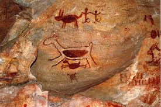

O Parque Nacional Serra da Capivara, no Piauí, criado em 1979 e Patrimônio da Humanidade pela UNESCO (1991), é um dos mais importantes sítios arqueológicos do mundo. Com mais de 1.300 sítios registrados, a região abriga as pinturas rupestres mais antigas das Américas e evidências, pesquisadas por Niède Guidon, que indicam presença humana há mais de 50.000 ou até 100.000 anos.

O que posso emcontrar na serra da capivara ?
O Parque Nacional Serra da Capivara, no Piauí, é um tesouro mundial, famoso pela maior concentração de pinturas rupestres do mundo, com mais de 1.000 sítios arqueológicos catalogados, incluindo o famoso Boqueirão da Pedra Furada. O local preserva vestígios da presença humana pré-histórica de até 50 mil anos, além de formações geológicas, trilhas, fauna da Caatinga e os museus da Natureza e do Homem Americano.
Onde posso entrar em contato para mais informações ?
Para informações oficiais, agendamentos de guias e visitação no Parque Nacional Serra da Capivara (PI), os melhores contatos são a Fundação Museu do Homem Americano (FUMDHAM), o ICMBio e guias credenciados locais, como Marília Gomes (+55 89 98108-5657). O parque protege sítios arqueológicos com pinturas rupestres em São Raimundo Nonato e arredores.